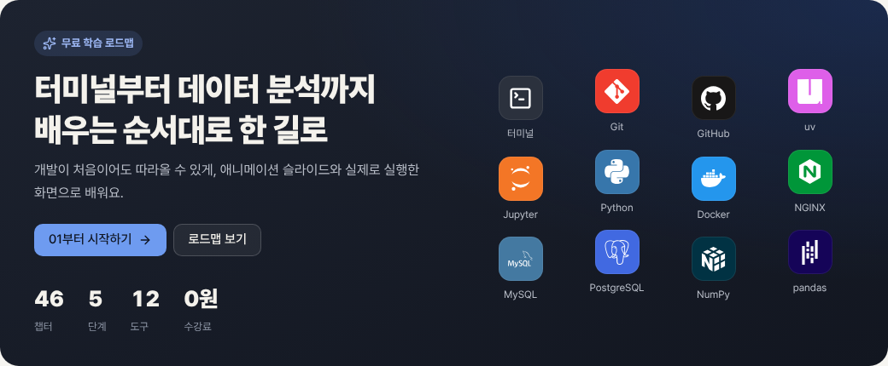
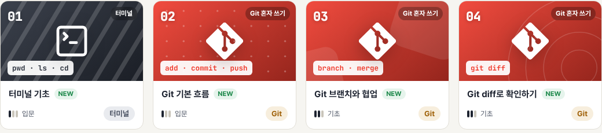
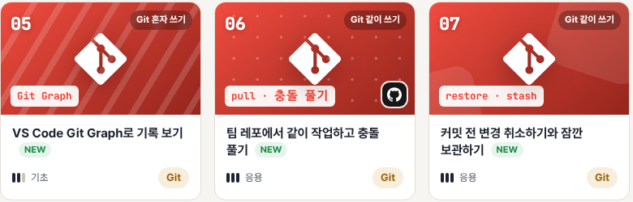
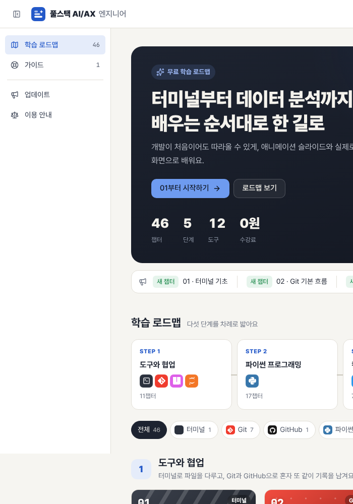

학습 사이트 디자인 시스템 v2
카드와 썸네일로 보기 좋게 바꾸면서 흐트러진 규칙을 처음부터 다시 정했어요. 덱의 종이색과 파랑 하나를 바탕에 두고, 그림은 그 챕터에서 배우는 코드 한 줄로 그려요.
지금 화면에서 무너진 곳
토큰 파일은 그대로 있는데, 카드형으로 바꾸면서 화면이 토큰을 거치지 않고 브랜드 색과 새 장식을 직접 썼어요.

시안은 덱과 같은 종이색(#F6F5F1)인데, 홈은 흰 바탕에 짙은 남색 그라데이션 히어로를 얹었어요. 반짝이 아이콘 배지, 숫자 통계, 로고 구름도 이 화면에만 있는 장식이에요.
고친 방법: 바탕은 종이색 하나. 히어로 그림은 장식 대신 다섯 단계를 계단으로 그려서 배우는 순서를 보여 줘요.

썸네일 바탕을 로고 원래 색(Git 빨강, uv 자주, Jupyter 주황)으로 칠해서, 분류색 6개와 강조색 파랑 규칙이 사라졌어요. 파이썬 17장은 같은 파란 칸에 같은 로고라 서로 구별되지 않아요.
고친 방법: 바탕은 분류색의 옅은 색. 로고는 흰 타일 안에 작게. 챕터마다 다른 것은 그 장의 코드 한 줄이에요.

번호, 오른쪽 위 묶음 이름, 키워드, NEW, 레벨 막대, 분류 배지가 한꺼번에 붙어요. NEW는 46개 챕터 모두에 붙었는데, Cloudflare가 기록을 얕게 받아서 모든 README의 첫 날짜가 오늘로 잡힌 탓이에요.
고친 방법: 카드에는 그림, 제목, 한 줄(레벨 · 묶음)만. 새 챕터 표시는 날짜를 curriculum.json에 적어 두고 7일 안의 것만.

홈에 장 화면용 사이드바가 붙어 있고, 흰 사이드바가 화면 중간에서 끊겨요. 메뉴 이름(강의, 꿀팁, 소식)은 바꿨지만 장 화면 위치 표시는 아직 "학습 로드맵"이에요.
고친 방법: 홈, 꿀팁, 소식은 위 메뉴만. 사이드바는 장 화면에만 두고 파트별로 묶어요.
원칙 네 가지
새 화면이나 컴포넌트를 만들 때 이 넷으로 먼저 걸러요.
색은 뜻이 있을 때만
강조는 파랑 하나. 분류색 6개는 썸네일 바탕과 분류 글자에만, 초록·빨강·주황은 실행, 오류, 확인에만 써요. 그라데이션은 쓰지 않아요.
카드에는 세 가지만
그림, 제목, 한 줄. 한 줄은 레벨과 묶음 이름이에요. 수강료, 숫자 통계, 의미 없는 배지는 넣지 않아요.
그림은 그 챕터의 내용으로
썸네일 가운데는 그 장에서 처음 치는 코드 한 줄(curriculum.json의 keyword)이에요. 로고는 무슨 도구인지 알려 주는 표시로만 작게 둬요.
값은 토큰에서만
컴포넌트 CSS에는 색, 크기, 간격 값을 직접 적지 않아요. 다크 화면은 토큰만 바꿔서 만들어요.
토큰
색, 글자 크기 9단계, 간격 8단계, 모서리 3개, 그림자 2개, 움직임 곡선 2개예요. 오른쪽 위 달 버튼으로 다크 값도 볼 수 있어요.
바탕과 글자
--paper모든 화면 바탕--surface카드, 칸--sunken--line--line-strong--ink--sub--muted--faint강조와 뜻이 있는 색
--accent버튼, 링크, 지금 위치--accent-soft--run새 챕터, 맞음--error--check꿀팁, 주의분류색 6개
--t-term옅게 --t-term-soft--t-git옅게 --t-git-soft--t-gh옅게 --t-gh-soft--t-py옅게 --t-py-soft--t-docker옅게 --t-docker-soft--t-db옅게 --t-db-soft글자
40 / 800홈 제목32 / 800장 제목24 / 800구역 제목20 / 800단계 제목16 / 700카드 제목16 / 400본문은 16px, 줄 간격 1.6이에요.14 / 400카드 설명, 표13 / 12레벨, 날짜, 단축키Pretendard가나다 ABC 0123 본문 글꼴JetBrains MonoSELECT * FROM 회원;+ D2Coding 한글kant_shop=# 한글 칸 맞춤간격, 모서리, 그림자
--s-14--s-28--s-312--s-416--s-524--s-632--s-748--s-864로고와 아이콘
사이트 로고는 계단 하나예요. 다섯 단계를 한 칸씩 오른다는 뜻이고, 홈 히어로의 계단 그림과 같은 모양이에요.
LogoTile: 도구 로고
Simple Icons(CC0) 모양을 원래 색 그대로, 같은 크기 흰 타일 안에 둬요. 없는 두 개(터미널, 데이터베이스)는 Lucide 선 아이콘이에요.
화면 아이콘
Lucide(ISC) 선 아이콘 하나만 써요. 18px, 선 두께 1.75, 색은 글자색을 따라가요.
썸네일
그림 파일 없이 CSS로 그려요. 챕터가 늘어도 curriculum.json에 keyword 한 줄만 적으면 돼요.
- 1바탕: 분류색의 옅은 색에 20px 모눈. 덱의 종이 느낌을 이어요.
- 2번호: 고정폭 글꼴, 분류색. 배우는 순서를 먼저 보여 줘요.
- 3도구 로고: 흰 타일, 두 도구를 쓰는 장은 둘까지.
- 4코드 한 줄: 그 장에서 처음 치는 명령. 챕터마다 다른 부분은 여기 하나예요.
분류마다 한 장씩
컴포넌트
이름은 코드의 컴포넌트 이름과 같아요. 지금 사이트의 컴포넌트 15개를 아래 19개로 정리해요.
Button
primary는 한 화면에 하나 · secondary · ghost · smFilterTabs · Level · NewTag
SearchButton · SearchDialog
ChapterCard · TipCard · NewsItem
정렬과 sorted, max, min 제대로 쓰기
터미널 환경에 적응하기
탐색기와 터미널 맞춰 보기, -h와 --help
PDF로 받을 수 있어요
슬라이드 아래 막대와 표에서 PDF를 바로 받아요.
NoticeBar · StageHeader · SectionHeader
12월 수업부터 머신러닝 챕터가 이어서 올라와요.
SQL
36–44PostgreSQL에서 표를 설계하고, 고르고, 합치고, 안전하게 고쳐요.
Breadcrumb · Callout · CodeBlock
column does not exist나머지
Header, SiteFooter, Sidebar(장 목록, 파트로 묶음, 접기), PlayerFrame(덱 플레이어 iframe), Prose(챕터 README), PrevNext, RoadmapSteps(홈 계단)는 화면 시안에서 봐요.
지금 컴포넌트와 짝
| 지금 | v2 | 바뀌는 점 |
|---|---|---|
| Thumb | Thumb | 브랜드 색 바탕과 무늬 4가지를 빼고, 분류색 모눈 + 코드 한 줄 |
| CurriculumList | FilterTabs + StageHeader + ChapterCard | 카드 표시 다섯 개를 셋으로. NEW는 날짜 기준 |
| LogoTile | LogoTile | 타일 색을 로고 색으로 칠하지 않고 늘 흰 타일 |
| Header, AppShell | Header + Sidebar | 홈은 위 메뉴와 찾기만, 사이드바는 장 화면에만 |
| 홈 hero, cloud, stats | RoadmapSteps | 어두운 히어로, 반짝이 배지, 숫자 통계, 로고 구름을 빼고 계단 하나 |
| NewsList, news-bar | NoticeBar + NewsItem | 공지 한 줄과 소식 카드 셋으로 나눔 |
| DeckLayout | Sidebar + PlayerFrame + Prose | 장 목록을 파트로 묶고 한 줄로. 오른쪽에 이 챕터 목차 |
화면
넓은 화면(1440px)과 휴대폰(390px)에서 찍었어요. 눌러서 실제 화면을 열어요.